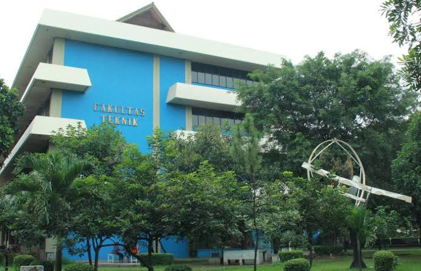

IMATIKA FT-KMUP adalah Ikatan Mahasiswa Teknik Informatika Fakultas Teknik Keluarga Mahasiswa Universitas Pancasila, yaitu organisasi himpunan mahasiswa tingkat program studi untuk jurusan S1 Teknik Informatika di Fakultas Teknik Universitas Pancasila.

Berikut adalah alur pendaftaran untuk organisasi kampus:
Untuk informasi lebih lanjut, Anda dapat mengunjungi website resmi universitas:
Website IMATIKA FT-KMUPAnda juga dapat menghubungi kami melalui email:
info@univpancasila.ac.id